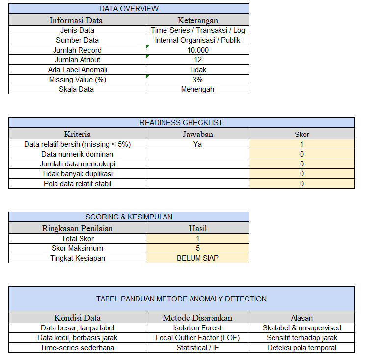

Portal Informasi
Distribusi Produk
Excel-Based
v1.0
Anomaly Detection Readiness & Method Selection Toolkit
Toolkit untuk menilai kesiapan data dan menentukan metode anomaly detection secara terstruktur, mudah dipahami, dan tanpa coding.
Preview

Manfaat
Kenapa toolkit ini membantu?
Cepat & Terstruktur
Checklist & skor otomatis untuk menilai kesiapan data.
Mudah Dipakai
Cukup isi Ya/Tidak, hasil kesimpulan muncul otomatis.
Dukung Keputusan
Panduan memilih metode sesuai kondisi data.
Fitur Utama
Komponen inti yang ada di toolkit.
Komponen
- Data Overview
- Readiness Checklist (Ya=1, Tidak=0)
- Scoring & Kesimpulan Kesiapan
- Method Selection Guide
Download
Akses langsung toolkit Excel.
Anomaly_Detection_Toolkit.xlsx
Versi 1.0 • Format Excel • Disarankan dibuka di Microsoft Excel
Cara Pakai (Lengkap)
Ikuti urutan ini biar hasil skor & rekomendasi metodenya benar.
0) Persiapan (wajib dibaca)
- Disarankan pakai Microsoft Excel (rumus & format paling aman). Google Sheets bisa, tapi kadang format/range berubah.
- Jangan hapus sel yang ada rumusnya (biasanya kolom skor & total).
- Kalau ada dropdown Ya/Tidak, gunakan dropdown. Kalau tidak ada, ketik konsisten: Ya / Tidak (jangan campur “ya/YES/iya”).
1) Quick Start (4 langkah cepat)
- Download file toolkit Excel.
- Buka di Excel.
- Isi Data Overview (informasi dataset).
- Isi Readiness Checklist (Ya/Tidak) → lihat Total Skor → baca Tingkat Kesiapan → gunakan Method Selection.
2) Cara Isi per Bagian (detail)
A) Data Overview (isi manual / diketik)
Tujuan: memberi gambaran dataset sebelum cek kesiapan.
- Nama dataset: contoh “Transaksi Minimarket 2024”.
- Jenis data: Time-series / Transaksi / Log / Sensor / Lainnya.
- Jumlah record: jumlah baris data (mis. 10.000).
- Jumlah atribut: jumlah kolom fitur (mis. 12).
- Ada label anomali?: Ya jika dataset punya kolom label anomali (mis. 0/1 atau normal/anomali).
- Missing value (%): persentase nilai kosong. Contoh cara hitung: (jumlah sel kosong / total sel) × 100.
- Catatan: tulis 1–2 kalimat (mis. “data ada outlier harga ekstrem, kemungkinan promo/typo”).
B) Readiness Checklist (Ya/Tidak)
Tujuan: menilai apakah data “siap” untuk anomaly detection.
Cara isi:
- Baca kriteria pada baris checklist.
- Pilih Ya kalau dataset memenuhi kriteria itu.
- Pilih Tidak kalau belum memenuhi.
Contoh patokan keputusan (biar jelas):
- Missing value rendah? → Ya kalau missing kecil (contoh < 5–10%), Tidak kalau besar.
- Format konsisten? → Ya kalau tanggal/angka rapi dan satu format, Tidak kalau campur-campur.
- Duplikasi terkendali? → Ya kalau duplikat masuk akal/sudah dibersihkan, Tidak kalau duplikat liar.
- Outlier ekstrem masuk akal? → Ya kalau outlier bisa dijelaskan (kejadian nyata), Tidak kalau outlier karena error input.
C) Scoring & Tingkat Kesiapan (otomatis)
Tujuan: dapat hasil akhir kesiapan berdasarkan jawaban checklist.
- Skor umum: Ya = 1, Tidak = 0.
- Total Skor = penjumlahan skor semua item checklist.
- Skor Maksimum = jumlah item checklist (mis. 5 item → maksimum 5).
- Tingkat Kesiapan muncul (Siap / Cukup / Belum) sesuai batas skor.
Contoh rumus (umum dipakai):
TotalSkor = SUM(kolom_skor_checklist)
TingkatKesiapan =
IF(TotalSkor >= 4, "SIAP",
IF(TotalSkor >= 2, "CUKUP SIAP", "BELUM SIAP"))
*Kalau checklist kamu lebih dari 5 item (mis. 8), batasnya tinggal disesuaikan (contoh: 7–8 Siap, 4–6 Cukup, 0–3 Belum).
D) Method Selection Guide (panduan metode)
Tujuan: memilih metode yang cocok berdasarkan kondisi data.
- Lihat kondisi dataset kamu (besar/kecil, ada label/tidak, time-series atau bukan).
- Cari baris yang paling cocok di tabel panduan.
- Pilih metode yang disarankan + tulis alasan singkat di laporan.
3) Output yang Wajib Dicatat
- Ringkasan dataset: jenis data, jumlah record, jumlah atribut, missing value (%), ada label/tidak.
- Hasil checklist: berapa “Ya” dan “Tidak” (boleh tabel ringkas).
- Total Skor dan Tingkat Kesiapan.
- Metode yang dipilih dari Method Selection + alasan 1–2 kalimat.
4) Kesalahan Umum (hindari)
- Menghapus sel rumus (skor tidak jalan).
- Isi Ya/Tidak tidak konsisten (mis. “ya”, “YES”, “iya”).
- Memindah kolom checklist tapi range SUM tidak ikut berubah.
- Link download error karena link belum diganti.
FAQ
Isinya dicoret atau diketik?
Diketik langsung di sel Excel (bukan dicoret).
Bisa dipakai tanpa label anomali?
Bisa, karena banyak metode anomaly detection bersifat unsupervised.
Kenapa skor saya tidak berubah?
Biasanya karena jawaban tidak konsisten (mis. “YES”), atau sel rumus terhapus/tertiban.
Pastikan pakai Ya/Tidak sesuai format.
Profil Tim
Informasi singkat pengembang.
Chaerul Hidayat
Project Lead • Dokumentasi
Desain toolkit, penjelasan pengisian, validasi format.
Muhammad Reza Maulana
Referensi • Indikator
Rujukan indikator dan literatur pendukung.
Hilman AMR
UI/Design • Publikasi
Landing page, tampilan, dan distribusi file.
Kontak
Email:
hilmanamr@mhs.pelitabangsa.ac.id